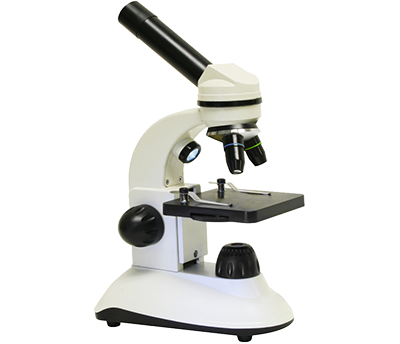
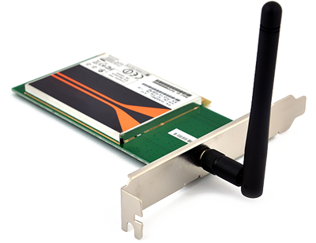

OMNEST models are written in C++, and execute on top of a streamlined simulation kernel to provide high event throughput. Diagnostic and animation features can be switched on and off at will and pose minimal overhead when not in use. OMNEST simulations execute fast and scale very well.

OMNEST simulations can be run in a graphical interactive runtime environment that allows you to explore the simulation model, animate packet transmissions and other events, letting you pause the model and run it in various modes, look at logs, peek into queues, buffers, and state variables, etc. This feature helps you understand the model, and it is also useful when demonstrating to third parties.
Simulations can also be run outside the IDE and independently from it, so you can harness the power of other computers or computing clusters in addition to your OMNEST workstation. Also, often you can utilize parallel simulation on clusters or multicore/multiprocessor architectures to speed up execution or to distribute memory requirements. Parallel simulation does not require models to be instrumented.

The OMNEST simulation kernel supports real-time and hardware-in-the-loop simulation via a plugin interface. Functioning, extensively commented source code examples will help you quickly implement your own application-specific hardware-in-the-loop simulation. Network emulation capability is available as part of model packages like the INET Framework.